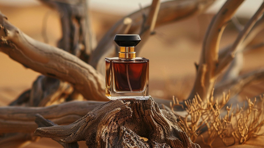

Parfüm Kategorileri
Kartların üzerine gel - arka yüzde parfüm önerileri seni bekliyor
Koku Aileleri

Toprak, orman ve ahşabın maskülen kucaklaşması. Güç ve zerafeti bir arada barındıran bu aile, hem gündüz hem gece şıklığıyla öne çıkar.

Doğu'nun zengin mirası: ağır, sıcak, gizemli. Gece etkinlikleri için ideal olan bu aile kendinden emin ve derin bir karakter çizer.

Özgürlüğün, enerjinin ve temizliğin kokusu. Sıcak mevsimlerde ferahlatıcı, spor sonrasında tazeleyici - her gün takılabilir hafiflikte.

Isı, hız ve karizma. Sizi fark ettiren bu aile, soğuk havalarda vücut sıcaklığıyla birleşince bambaşka bir boyut kazanır.

Yenilip içilebilecekmiş gibi davetkar. Gece için vazgeçilmez olan bu aile, yakın mesafede sizi unutulmaz kılar. Özellikle sonbahar-kışta patlama yapar.
.jpg)
Artık sadece kadınlara ait değil. MYSLF ve Black Orchid gibi parfümler çiçekli notaların maskülen yorumunu mükemmel şekilde sunuyor. Cesur ve özgün bir seçim.
Mevsime Göre Seçim
İlkbahar & Yaz
Sıcakta yoğun parfümler boğucu olabilir. Aquatik, narenciye ve hafif odunsu kategoriler tercih edilmeli. Invictus, MYSLF, Paradise Garden ve Blue Talisman bu mevsimin öne çıkanları.
Sonbahar & Kış
Soğuk havalarda derin, ısıtıcı notalar vücut sıcaklığıyla etkileşime girer. Oryantal, odunsu ve baharatlı kategoriler bu mevsimde parlar. Sauvage Elixir, Bottled Absolu, Arabians Tonka.
Gece & Özel Anlar
Tatlı, deri ve oryantal kategoriler yapay ışık altında farklı bir derinlik kazanır. Le Male Elixir, The One, Black Orchid - gece için doğanın en güçlü silahları.